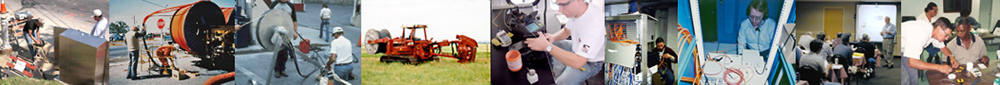

Libro FOA · Capítulo 01
Introducción a la fibra óptica
Historia, aplicaciones, normas y precauciones para empezar a trabajar con fibra óptica.
En este capítulo
Qué aprenderás
- ¿Qué significa "fibra óptica"?
- Cómo se desarrolló y utilizó la fibra en las comunicaciones
- Diferencia entre fibra óptica "de planta externa" y "de predios"
- Algunas ventajas de la fibra óptica
- Qué normas cubren la fibra óptica
- Cómo trabajar con fibra de forma segura

Que es la “Fibra Óptica”?
La fibra óptica es la tecnología de transmisión de luz a través de finos filamentos de fibras ópticas muy transparentes, normalmente de vidrio, pero a veces de plástico. La fibra óptica se utiliza en comunicaciones, iluminación, medicina, inspecciones ópticas y para fabricar sensores. Este capítulo se centra en la fibra óptica para comunicaciones.
Breve Historia
Las comunicaciones por fibra óptica comenzaron en los años 70 en laboratorios de I+D de todo el mundo (Corning, Bell Labs, ITT UK, etc.) y se instalaron comercialmente por primera vez en Dorset (Inglaterra) por STC y en Chicago (EE.UU.) en 1976 por AT&T. A principios de los 80, las primeras redes de telecomunicaciones por fibra óptica conectaban las principales ciudades de cada costa de EE.UU. y comenzaron a instalarse en todo el mundo.
A mediados de los 80, con la introducción de las primeras fibras monomodo, el ancho de banda y la distancia de la fibra la hicieron mucho más barata que otros medios de comunicación y empezó a sustituir a todos los enlaces de larga distancia de cobre, microondas y satélite de las telecos. En los años 90, los cables transoceánicos de fibra óptica habían sustituido a los satélites entre la mayoría de los continentes. Ahora la fibra es más rentable para la conexión directa al hogar.
La CATV descubrió la fibra a mediados de los 90 y la utilizó primero para mejorar la fiabilidad de sus redes, un gran problema. Poco después, los operadores de sistemas de CATV descubrieron que podían ofrecer servicios telefónicos y de Internet por esa misma fibra y ampliaron enormemente sus mercados.
La Internet se transmitió por primera vez a través de líneas telefónicas que a finales de los años ochenta eran sobre todo de fibra. Pero a medida que crecía el tráfico de Internet con la llegada de la web y el uso del correo electrónico por todo el mundo, pronto superó al de voz en volumen de tráfico y se encontró con que el sistema telefónico, optimizado para la transmisión de voz, era muy ineficiente para grandes cantidades de datos digitales. Internet, con sus protocolos de transmisión únicos, se independizó de la red telefónica, aunque a menudo utilizaba fibras en los mismos cables.
A medida que los teléfonos móviles fueron mejorando y abaratándose, creando un mercado gigantesco para las comunicaciones personales y el acceso portátil a datos, sus redes troncales se construyeron sobre fibra. Las asignaciones de frecuencias para los sistemas inalámbricos eran limitadas, por lo que la red troncal celular utilizaba fibra para conectarse a las redes telefónicas mundiales. A medida que han ido creciendo las comunicaciones inalámbricas celulares, los requisitos de cobertura se han ampliado hasta requerir el uso de fibra óptica para conectar directamente las antenas de las torres de telefonía móvil a la electrónica de base de las torres, los sistemas de antenas distribuidas (DAS) en grandes instalaciones públicas y las células pequeñas en zonas urbanas.
Las ciudades empezaron a utilizar la fibra óptica muy pronto, conectando primero las escuelas, las redes de datos de los organismos municipales y las organizaciones de seguridad pública. Los sistemas de autopistas inteligentes llevaron a conectar los semáforos "inteligentes" a las redes. Esto optimizó el flujo de tráfico. Cuando la preocupación por el terrorismo llevó a instalar muchas cámaras de vigilancia por las ciudades, la distancia entre las cámaras y las estaciones de control era lo suficientemente larga como para que fuera necesario conectarlas por fibra.
Ahora las ciudades se están convirtiendo en "ciudades inteligentes" con grandes redes metropolitanas de fibra óptica que ofrecen conectividad por fibra a los hogares y las empresas, la ampliación de los semáforos inteligentes para incluir servicios de apoyo a los futuros vehículos autónomos, la prestación de servicios inalámbricos ampliados con WiFi público y servicio de células pequeñas y el movimiento de las grandes cantidades de datos generados por lo que algunos llaman el "Internet de las Cosas" ("IoT" por siglas en inglés).
Las redes de ordenadores (LAN) empezaron a utilizar la fibra más o menos al mismo tiempo que las telecos, a finales de la década de los 1970s. Los enlaces industriales fueron una de las primeras aplicaciones, ya que la inmunidad al ruido de la fibra y su capacidad de distancia la hacían ideal para las fábricas. A continuación se conectaron las pantallas gráficas y los enlaces de almacenamiento de los mainframes, los predecesores de las actuales SAN (redes de área de almacenamiento) de fibra en los centros de datos. Hoy en día, la fibra se utiliza en la mayoría de las LAN corporativas como red troncal, conexiones a ordenadores de escritorio para estaciones de trabajo de ingeniería y gráficos y muchos puntos de acceso inalámbricos.
Los servicios públicos también se han convertido en grandes usuarios de fibra. Prácticamente todas las tuberías o líneas eléctricas llevan fibra en paralelo o incluso dentro de los cables en el caso de las líneas de distribución eléctrica de alta tensión. La fibra proporciona comunicaciones a través de las rutas y a veces incluso incluye sensores que hacen un seguimiento del rendimiento y los problemas. Las compañías eléctricas están desarrollando "redes inteligentes" para que su distribución de energía sea más eficiente y estas redes dependen de la fibra para las conexiones. También se han desarrollado otras aplicaciones: buses de datos para aviones, barcos y automóviles, CCTV para seguridad, sistemas de automatización de edificios, redes industriales y maquinaria, ¡incluso enlaces para equipos estéreo digitales de consumo!
Hoy en día, la fibra óptica es el medio dominante o una opción lógica para cualquier sistema de comunicación. Los costes se han reducido tanto que la fibra hasta el hogar es ahora rentable, sobre todo porque puede ofrecer servicios (tanto de entretenimiento como de comunicaciones) que ningún otro medio ofrece.
¿Cual Fibra Óptica?
Siempre que leas un artículo o hables con alguien sobre fibra óptica, es importante que sepas a qué fibra óptica se refieren. No toda la fibra óptica es igual. Nosotros sólo nos ocupamos de la fibra óptica para comunicaciones, pero también se utiliza para iluminación, inspección en pruebas médicas y no destructivas y fabricación de sensores para mediciones físicas.
En comunicaciones, distinguimos entre aplicaciones de fibra óptica que difieren en diseño e instalación: Fibra óptica "fuera de planta", tal como se utiliza en redes telefónicas, CATV, redes metropolitanas, servicios públicos, etc. o fibra óptica "local" o en predios como la que se encuentra en edificios y campus. Al igual que "cable", que puede significar muchas cosas distintas -energía eléctrica, seguridad, climatización, CCTV, LAN o teléfono-, la fibra óptica no es lo mismo. Y esto puede ser una gran fuente de confusión para los principiantes. Definamos nuestros términos.
Planta Externa
Las compañías telefónicas, la televisión por cable e Internet utilizan fibra óptica, prácticamente toda la cual se encuentra fuera de los edificios y suele denominarse planta externa (OSP, por sus siglas en inglés). Los cables de fibra óptica de la OSP cuelgan de postes, están enterrados, pasan por conductos o incluso están sumergidos bajo el agua. La mayor parte va distancias relativamente largas, aunque los enlaces OSP pueden extenderse desde unos pocos cientos de metros hasta cientos o miles de kilómetros.
Las instalaciones OSP pueden clasificarse en cuatro grandes categorías, definidas por el modo en que se instala el cable. Los cables subterráneos se tiran en conductos enterrados bajo tierra, normalmente en conductos más grandes con conductos interiores que llevan un cable cada uno. Los cables enterrados directamente también son subterráneos, pero los cables resistentes se entierran sin conducto, y a menudo se instalan con un arado que excava y coloca el cable de una sola vez. Los cables aéreos están tendidos en postes, y el método de soporte determina los tipos de cables. Algunos están amarrados a cables metálicos de mensajería, otros tienen elementos metálicos de soporte incorporados a un cable en forma de "figura 8", otros son autosoportados. Incluso hay líneas eléctricas de alta tensión que tienen fibras en el centro. Los cables submarinos son el principal medio de comunicación internacional en la actualidad. Son cables extremadamente resistentes que se colocan utilizando buques especiales para el tendido de cables. A menudo nos referimos a los cables subaquáticos también como cables submarinos, pero no son tan resistentes como los cables submarinos transoceánicos.
Los cables de planta exterior suelen tener un número de fibras muy elevado, de hasta 288 fibras o más. Los diseños de los cables se optimizan para la aplicación: cables en conducto optimizados para tensión de tracción y resistencia a la humedad, cables enterrados optimizados para resistir la humedad y los daños de los roedores, cables aéreos optimizados para tensión continua y condiciones meteorológicas extremas y cables submarinos optimizados para resistir la penetración de la humedad. La instalación requiere equipos especiales, como extractores de cable o arados, e incluso remolques para transportar bobinas gigantes de cable.
Las distancias largas implican que los cables se empalman, ya que no se fabrican en longitudes superiores a unos 4-5 km (2.5-3 millas), y la mayoría de los empalmes se realizan por fusión. Los cables suelen terminarse con pigtails de empalme por fusión o conectores de empalme (SOC) con conectores SC o LC. Tras la instalación, cada fibra y cada empalme se prueban con un OTDR y un equipo de prueba de pérdidas ópticas.
La instalación de plantas exteriores requiere mucho equipo pesado. El instalador suele disponer de una furgoneta o remolque con temperatura controlada para empalmes y/o un camión customizado. Los arados de cable y los extractores son habituales. Los instaladores han invertido en empalmadoras de fusión, OTDR y otros equipos que pueden ser bastante caros. La mayoría de las instalaciones telefónicas de planta externa las realiza la propia empresa de telecomunicaciones, aunque hay varios instaladores especializados que realizan trabajos de CATV, servicios públicos y municipales.
Cableado de Predios
Por el contrario, el cableado en predios (cableado instalado en un edificio o campus) tiene distancias más cortas, rara vez superiores a unos cientos de metros, y suele tener menos fibras por cable. La fibra es mayoritariamente multimodo, excepto para el usuario ilustrado que instala cable híbrido con fibras multimodo y monomodo para futuras aplicaciones de gran ancho de banda.
El empalme es prácticamente desconocido en las aplicaciones de predios. Los cables entre edificios pueden comprarse con doble cubierta, de PE para protección de plantas exteriores y de PVC para aplicaciones en edificios que requieren cubiertas ignífugas, de modo que los cables pueden tenderse de forma continua entre edificios. Los conectores actuales suelen tener menos pérdidas que los empalmes, y los paneles de conexión ofrecen más flexibilidad para movimientos, adiciones y cambios.
La mayoría de los conectores son de tipo SC o ST, aunque los LC son cada vez más populares. La terminación se realiza instalando conectores directamente en los extremos de las fibras, principalmente mediante técnicas de empalme adhesivo o a veces prepulido. Las pruebas se realizan con una fuente y un medidor, pero todo instalador debería tener un trazador tipo linterna para comprobar la continuidad y la conexión de la fibra.
A diferencia del técnico de planta exterior, el instalador de cableado de predios (que a menudo también está instalando el cable eléctrico y Cat 5/6 para LAN) probablemente tiene una inversión relativamente pequeña en herramientas y equipos de prueba. Hay miles de instaladores de cableado que trabajan con fibra óptica. Han descubierto que no es "ciencia espacial" y su pequeña inversión inicial en formación, herramientas y equipos de prueba se amortiza rápidamente.
Los Instaladores
Pocos instaladores se dedican tanto al cableado exterior como al de las instalaciones de predios. Las empresas que lo hacen suelen ser muy grandes y a menudo tienen divisiones separadas que se encargan de cada cosa con personal diferente. La mayoría de los contratistas solo se dedican al cableado de las instalaciones.
¿Fibra, Cobre o Inalámbrico?
La mayor ventaja de la fibra óptica es que es el medio más rentable de transportar información. La fibra puede transportar más información a distancias más largas en menos tiempo que cualquier otro medio de comunicación.
La capacidad de ancho de banda y distancia de la fibra significa que se necesitan menos cables, menos repetidores, menos energía y menos mantenimiento. Además, la fibra no se ve afectada por las interferencias de la radiación electromagnética, lo que permite transmitir información y datos con menos ruido y menos errores. La fibra es más ligera que los cables de cobre, lo que la hace popular en aplicaciones aeronáuticas y de automoción.
La tecnología inalámbrica se utilizó como medio de larga distancia hasta que apareció la fibra, pero está limitada por las frecuencias de transmisión disponibles, por lo que se abandonó como medio de larga distancia. Aunque la telefonía inalámbrica local ha crecido exponencialmente, utiliza la fibra como columna vertebral y conexión con el sistema telefónico internacional.
Estas ventajas hacen que el uso de la fibra óptica sea la opción más lógica en la transmisión de datos.
Hace veinticinco años, la fibra se acababa de introducir. Era cara y se necesitaban doctores de los laboratorios Bell para instalarla, mientras que el cable de cobre era fácil de instalar. Hoy en día, la mayoría de los instaladores de cableado de comunicaciones realizan instalaciones de fibra e inalámbricas, además de cobre.
Como la fibra es tan potente, a las velocidades de red actuales la fibra tiene mucho margen de capacidad y los usuarios pueden mirar al futuro de velocidades de diez a cien gigabits con confianza. En la actualidad, las empresas de telecomunicaciones utilizan DSL sobre cobre, pero su ancho de banda es muy limitado en las longitudes de conexión típicas de los abonados y muchos cables de cobre antiguos no admiten velocidades DSL, lo que ha llevado a la adopción de la fibra hasta el hogar. La Ethernet gigabit sobre cobre funciona con cables cortos en redes LAN pero sólo si se instala y prueba cuidadosamente.
Pero, ¿no es más cara la fibra? Las telecos y los operadores de CATV utilizan la fibra porque en realidad es mucho más barata. Optimizan la arquitectura de su red para aprovechar las ventajas de velocidad y distancia de la fibra. En las LAN, hay que seguir la norma EIA/TIA 568 de "fibra centralizada" para optimizar el uso de la fibra, y entonces puede ser más barata que el cobre. Instalar la fibra adecuada hoy en una LAN le dará buenas posibilidades de poder manejar nuevas velocidades de red durante años. Una fibra, de grado FDDI 62.5/125, ha sobrevivido a 9 generaciones de cobre.
Los Estándares Facilitan las Aplicaciones de Fibra
La adopción de cualquier tecnología depende de la existencia de normas viables que garanticen la compatibilidad de los productos. La mayoría de lo que llamamos normas son estándares voluntarios creados por grupos industriales. No son "códigos" ni leyes que haya que respetar para cumplir las ordenanzas locales, sino directrices sensatas para garantizar el correcto funcionamiento de los sistemas de comunicaciones. Las normas suelen ser elaboradas por grupos de cada país, como EIA/TIA o IEEE en EE.UU., pero cada vez son más internacionales bajo los auspicios de ISO e IEC.
Normas como la EIA/TIA 568 (de la Alianza de Industrias Electrónicas y la Asociación de la Industria de Telecomunicaciones de EE.UU.), que cubre todos los aspectos necesarios para instalar una red de cableado local estándar, son buenas directrices para el diseño y deben seguirse para garantizar la interoperabilidad. Las principales normas de medición, como las de potencia óptica, las establecen los organismos de normalización de cada país, como el NIST (Instituto Nacional de Normalización y Tecnología de EE.UU.), y se coordinan en todo el mundo.
La única "norma obligatoria" común en Estados Unidos -los llamamos códigos- es el NEC 770 (National Electrical Code). El NEC especifica normas de seguridad eléctrica y prevención de incendios que incluyen los cables de fibra óptica. Otros países tienen códigos similares para la seguridad de los edificios. Si un cable de interior no tiene la clasificación NEC - no lo instale - no pasará la inspección.
Dos Puntos Críticos al Trabajar con Fibra
Seguridad al Trabajar con Fibra Óptica
Algunas personas piensan que los daños oculares por trabajar con láseres serían la gran preocupación en las instalaciones de fibra óptica. La realidad es que los láseres de alta potencia que hacen agujeros en el metal o que queman las verrugas del dedo tienen poca importancia en una instalación típica de fibra óptica. Las fuentes ópticas utilizadas en fibra óptica suelen tener niveles de potencia mucho más bajos (la excepción son los láseres de alta potencia de las telecomunicaciones por DWDM o sistemas CATV). Por supuesto, siempre hay que tener cuidado con los ojos, especialmente cuando se utiliza un microscopio de fibra óptica que puede concentrar toda la luz de una fibra en el ojo. NUNCA mires dentro de una fibra a menos que sepas que no hay luz (utiliza un medidor de potencia para comprobarlo) y, de todos modos, la luz está en el infrarrojo y no puedes ver nada.
El verdadero problema de seguridad son siempre los pequeños pedacitos de vidrio que se desprenden de los extremos de las fibras que se terminan o empalman. Estos pedacitos son muy ¡peligrosos! Los extremos hendidos son extremadamente afilados y pueden penetrar fácilmente la piel. Si te entran en los ojos, son muy difíciles de eliminar. Ni se te ocurra pensar en lo que puede pasar si te comes una. Lleva siempre gafas de seguridad cuando trabajes con fibra y deshazte cuidadosamente de los restos de fibra.
Siga siempre estas normas cuando trabaje con fibra.
1. Utiliza siempre gafas de seguridad para protegerte los ojos de los restos de fibra.
2. Elimine correctamente todos los restos. Utilice siempre un contenedor debidamente marcado para desecharlos después y trabaje sobre una almohadilla negra que facilite la localización de las astillas de vidrio.
3. No los deje caer al suelo, donde se clavarán en alfombras o zapatos y serán arrastrados a otros lugares.
4. No coma ni beba cerca de la zona de trabajo.
El empalme y la terminación de fibra óptica utilizan diversos adhesivos y limpiadores químicos como parte de los procesos. Siga atentamente las instrucciones de uso (detalladas en la ficha de datos de seguridad del producto químico). Recuerde que incluso el alcohol isopropílico simple, utilizado como limpiador, es inflamable.
Cero Tolerancia con la Suciedad
Con la fibra óptica, nuestra tolerancia a la suciedad es casi nula. Las partículas suspendidas en el aire son del tamaño del núcleo de la fibra SM, absorben mucha luz y pueden rayar los conectores si no se eliminan. La suciedad en los conectores es la principal causa de arañazos en los conectores pulidos y de mediciones de pérdidas elevadas.
Procura trabajar en una zona limpia. Evite trabajar cerca de rejillas o sistemas de calefacción, ya que echan polvo por todas partes.
1. Mantenga siempre guardapolvos en los conectores, puntos para empalmes mecánicos, paneles de conexión o cualquier otra cosa con la que se vaya a realizar una conexión.
2. Utilice limpiadores especiales para fibra óptica o esponjas sin pelusa y alcohol isopropílico para limpiar los conectores.
3. Las férulas de los conectores/cables utilizados para las pruebas se ensuciarán al raspar el material del manguito de alineación en el casquillo de empalme, creando un atenuador. Puede ver cómo se ennegrece el borde delantero de la férula del conector. Utilice los manguitos de alineación metálicos o cerámicos sólo para pruebas.
Preguntas de Repaso
Verdadero/Falso
Indique si la afirmación es verdadera o falsa.
______ 1. La mayoría de las instalaciones de planta externa son de fibra monomodo.
______ 2. Los empalmes son muy poco frecuentes en las redes en predios.
______ 3. La fibra se utiliza en las redes telefónicas de larga distancia porque es mucho más barata que el cable de cobre.
______ 4. La luz peligrosa de los cables de fibra óptica es brillante y fácilmente visible.
______ 5. Además de causar atenuación, las partículas de suciedad pueden provocar arañazos en los extremos pulidos de las fibras.
Elección Múltiple
Identifique la opción que mejor complete el enunciado o responda a la pregunta.
6. El cableado exterior de la planta puede ser instalado por.
- Introducción subterránea en conducto
- Entierro directo
- Suspensión aérea
- Todos los anteriores
7. El cable subterráneo suele incluir un gel, polvo o cinta para protegerlo de.
- Fricción de tracción
- Rayos
- Humedad
- Abrasión de la fibra
8. El cable blindado se utiliza en instalaciones de plantas exteriores para.
- Evitar daños por roedores
- Proteger de los daños causados por las excavaciones
- Aumentar la tensión de tracción
- Desviar descargas eléctricas
9. La concatenación o unión de dos cables en un tramo largo de planta exterior se realiza casi siempre mediante.
- Empalme mecánico
- Empalme por fusión
- Instalación en sitio de conectores
- Empalme en conectores pigtail
10. Los cables en predios de las redes troncales LAN suelen contener.
- Sólo fibra multimodo
- Sólo fibra monomodo
- Fibra multimodo y monomodo
- Fibra óptica de plástico
______ 11. Los cables de las instalaciones de predios deben estar clasificados para ______ para cumplir los códigos.
- Fuerza de tracción
- Radio de curvatura
- Peso en bandejas de cables
- Retardancia al fuego
12. El equipo de protección que todo instalador de VDV (voz, datos, video) debe llevar siempre es.
- Protección ocular
- Delantal de plástico
- Guantes
- Cubrezapatos
13. La información sobre la seguridad de los productos químicos utilizados en fibra óptica son o están.
- Disponible en los Institutos Nacionales de Salud
- En las fichas de datos de seguridad (MSDS) suministradas por los fabricantes
- Obligatorio en el kit de herramientas de todo instalador
- Raramente útil
______ 14. Mantenga siempre los/las ______ en los conectores cuando no estén conectados al equipo o se estén probando.
- Adaptadores de acoplamiento
- Botas antideformantes
- Cinta adhesiva
- Guardapolvos